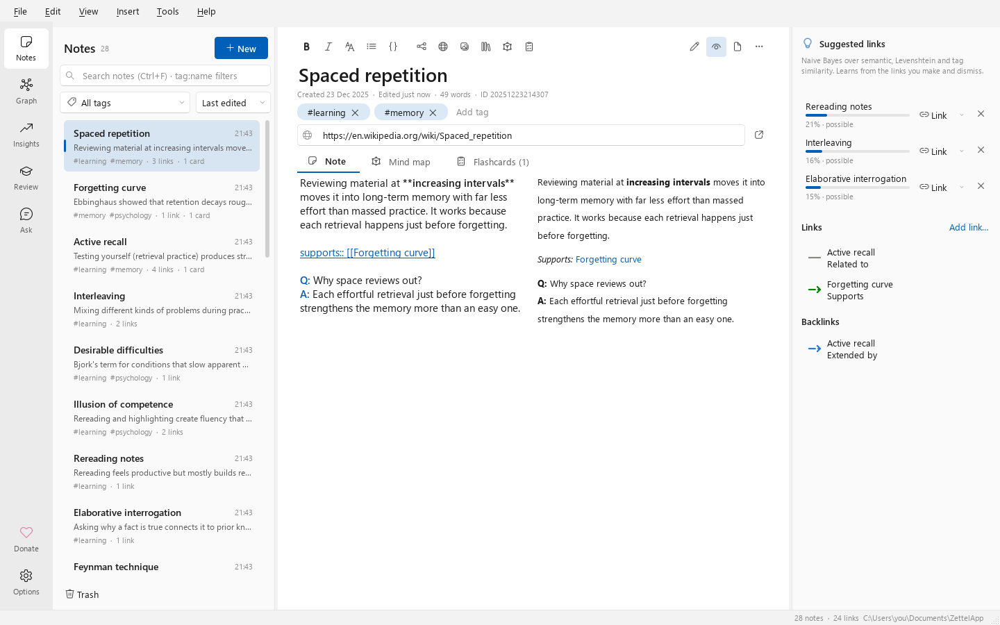

入门
安装
ZettelApp 可在 **Windows 10(21H2 或更高版本)和 Windows 11(64 位)**上运行。请从最新版本下载:
| 下载 | 适用情况 |
|---|---|
ZettelApp-Setup.exe |
你想要常规安装:带有开始菜单条目、位于 设置 ▸ 应用 中的卸载程序,以及可从 Anki 打开笔记的 zettelapp:// 链接。无需管理员权限:仅为你的账户安装。 |
ZettelApp-Portable.zip |
你无法安装软件,或者想从 U 盘运行。解压到任意位置并运行 ZettelApp.exe。 |
安装程序会询问使用哪种语言,并建议你的 Windows 显示语言。安装程序和应用均已翻译成 11 种语言;可在选项中更改应用的语言。
每个版本都附有 SHA-256 校验和(SHA256SUMS.txt)。要在 PowerShell 中校验下载的文件:
Get-FileHash .\ZettelApp-Setup.exe -Algorithm SHA256
“Windows 已保护你的电脑”
构建版本目前尚未进行代码签名,因此 Microsoft Defender SmartScreen 可能会在你第一次运行安装程序时发出警告。如果你是从官方发布页面下载的,并且校验和一致,请选择更多信息 ▸ 仍要运行。代码签名已列入路线图。
你的第一个库
库是存放你笔记的文件夹:一个数据库文件(zettel.db)和一个存放图片的 assets 文件夹。首次启动时,ZettelApp 会在 Documents\ZettelApp 中创建一个库,其中有十一条相互链接的入门笔记。欢迎使用 ZettelApp 这条笔记会带你了解链接、标签、图片、思维导图、闪卡以及应用的其余部分。一个可选的十分钟探险,则通过真实操作提供同样的导览。通过*文件 ▸ 新建库…或文件 ▸ 打开库…*创建的新库会得到同样的入门材料,因此你可以在其他位置工作,例如 OneDrive 文件夹。文件 ▸ 最近打开会列出你最近使用的库。
笔记会在你输入时自动保存。这里没有“保存”按钮。
窗口导览

左侧的导航栏用于在各页面之间切换(Ctrl+1 到 Ctrl+5):
- 笔记:笔记列表、编辑器和侧边栏。
- 列表提供搜索(也支持
tag:name筛选)、标签筛选、排序和回收站。 - 编辑器包含标题、标签、可选的来源链接,以及用于笔记(Markdown,有编辑、分屏和预览模式)、其思维导图和其闪卡的标签页。
- 侧边栏显示链接建议、该笔记的链接及其反向链接。
- 列表提供搜索(也支持
- 图谱:以 2D 或 3D 网络呈现你的笔记,可按标签或主题聚类着色。
- Insights:关于你的库的统计和图表。
- 复习:间隔重复复习、测验和 Anki。
- 提问:使用你选择的 AI 服务商询问关于你笔记的问题(可选)。
选项(导航栏底部,或工具 ▸ 选项…,Ctrl+,)包含各项偏好设置:主题、编辑器文字大小、链接建议、链接类型、AI、MCP 服务器、Anki、Zotero、Windows 集成和备份。
应用会跟随你的 Windows 浅色/深色设置和强调色。你可以在视图 ▸ 主题中强制指定主题。
更新
启动约四秒后,ZettelApp 会向 https://dutrairs.github.io/ZettelApp/version.json 发出一次 HTTPS 请求,以获知最新版本。它不会发送其他任何内容(只有一个 ZettelApp/<version> 用户代理),如果请求失败,你也不会看到任何提示。当存在更新的版本时,右下角会出现一个小通知,每个版本最多出现一次。它从不抢占焦点。下载会在浏览器中打开发布页面,✕ 关闭通知,不检查更新则关闭检查功能。你可以在工具 ▸ 选项 ▸ 常规 ▸ ZettelApp 启动时检查更新中重新开启。ZettelApp 绝不会自行安装任何内容。
卸载
使用 Windows 设置 ▸ 应用 ▸ 已安装的应用 ▸ ZettelApp ▸ 卸载。确认后,会出现一个对话框,其中有一个未勾选的同时删除我的 ZettelApp 设置和数据选项。它会删除你的设置、已保存的 API 密钥、日志、缓存和自动备份(%LOCALAPPDATA%\ZettelApp),以及你的所有笔记(你各个库的数据库和附件)。保持未勾选即可保留你的笔记。对于便携版,删除它的文件夹即可。